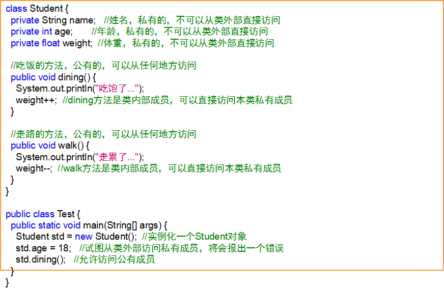
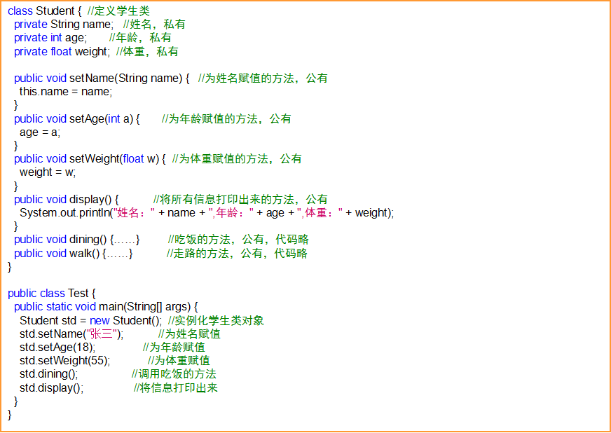
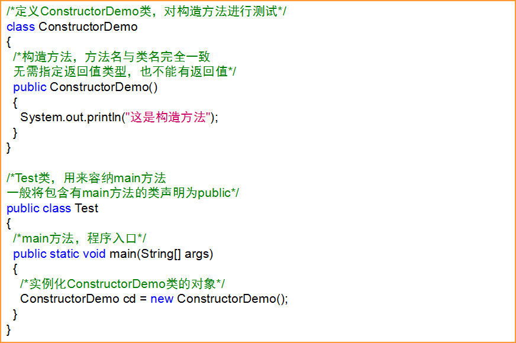
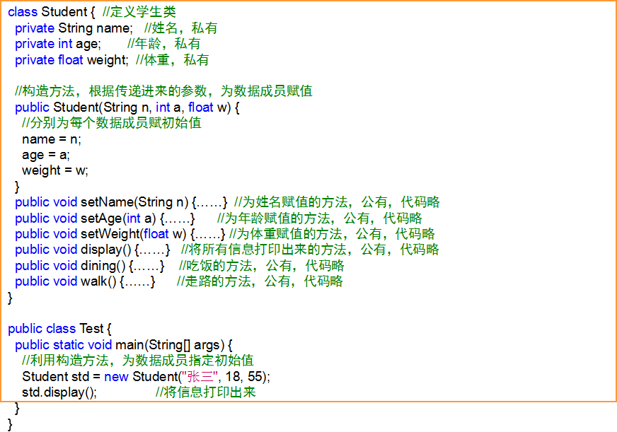

Java与面向对象
-
面向对象就是使用对象进行程序设计，简写成OOP（Object Oriendted Programming）。
-
在程序里面首先分解出来的应该是注意不再是一步一步的过程了，而是首先考虑在这个问题域里面或者程序里面应该具有有哪些对象，所以从现在开始考虑任何问题脑子里不要再想着我实现这件事我第一步应该干什么，第二步应该干什么，如果这样想，那就是面向过程的思维了。面向对象的思维是，当我碰到这个问题域的时候，碰到这个程序的时候，我首先应该把这个问题里有哪些对象，对象与对象之间有什么关系抽象出来。
-
面向对象的基本思想是，从现实世界中客观存在的事物出发来构造软件系统，并在系统的构造中尽可能运用人类的自然思维方式。
-
面向对象更加强调运用人类在日常生活的逻辑思维中经常采用的思想方法与原则，如抽象、分类，继承、聚合、多态等。人在思考的时候，首先眼睛里看到的是一个一个的对象。
-
对象是面向对象编程的核心部分，是实际存在的具体实体，具有明确定义的状态和行为；对象其实就是“数据”和“函数”的封装体，其中：数据表示自身的状态，也称作“属性”或“成员数据”；函数表示自身的功能，也称作“方法”或“成员函数”。
一、面向对象的特点
-
封装：把数据和行为结合在一个包中，并对对象的使用者隐藏数据有关的实现过程，封装赋予对象“黑盒”特性。
-
继承：是一种连结类的层次模型，并且允许和鼓励类的重用，提供了一种明确表示共性的方法。继承意味着能声明一个类型，而且能继承父类中的所有操作和数据，同时还有机会声明自己的新方法以改进、具体化、代替或者扩展父类中的方法使用父类为应用领域建立层次模型，提供代码重用并允许定制。
-
抽象：抽象是忽略一个主题中与当前目标无关的方面，把现实世界中的概念转换为对象,可以是表示数据的VO对象或抽象类，也可以是表示一类行为的接口。有利于从众多变化的状态中抽离出不变的东西。有利于使用继承来构造类的体系，实现多态，使用模板和工厂模式方法来实现对业务过程的抽象。抽象是概念建模和业务流程建模很重要的工具，是面向对象体系的基石，而不是一堆杂乱、混乱、重复、散沙般的、关系错综复杂的类。抽象的过程其实就是面向对象编程的核心思想。
-
多态：多态是指同一函数在不同的类中有不同的实现。
二、类与对象
-
人们为了更好地认识世界，将现实生活中的事物（对象）划分成类；同一类中的事物总是具有一些共性；类以共同的特性和行为定义实体；类是具有相同属性和和行为的一组对象的集合。
- 事物的特性在类中用变量表示；每个对象的每个属性都拥有其特定的值；属性名称由类的所有对象共享；对象或实体拥有的特征在类中表示时称为属性。
-
事物的行为和动作在类中用函数表示；每个对象都有相同的动作和行为；对象执行的操作在类中表示为方法。
- 类是用来描述实体的“模板”或“原型”对象是实际的实体，每一个对象都是类的一个具体实例；类用来定义对象所有的属性和方法，同一类的所有对象都拥有相同的特征和操作；可以将类理解成生产产品的模具，而对象则是根据此模具生产的一个个产品。
三、在Java中定义类
四、在Java中创建对象
五、创建对象的语法
-
和数组相似，对象也是引用数据类型，只能使用new运算符从堆中分配内存；
- 创建对象的一般语法：类名 引用名 = new 类名();
-
使用已经定义好的类，创建该类对象的过程称为“实例化”。
成员运算符与访问权限修饰符
- 只有先实例化类的对象，才可以访问到类中的成员（属性和方法。
-
使用成员运算符（.）来访问成员属性或成员方法一般语法是：对象名.成员名，如：
std.age = 18;std.dining();
-
为了避免从类外部直接访问类成员而造成的数据损坏，Java对类成员的访问制定了约束；关键字public和private是访问修饰符，用来说明某个成员是否可以从类外部进行访问；public修饰的成员可以在任何地方进行访问，不受任何约束；private修饰的成员只能够被本类中的其它成员访问，而不能从类的外部进行访问。

-
加上访问修饰符有时候可能会给操作数据带来不便，但可以在很大程度上保证数据的安全；一般地，我们会将成员属性声明为private，而将成员方法声明为public，但这样做并不是绝对的有时候，类外部可能要操作到某些私有数据成员，那么就可以增加一个公有的方法，再由这个方法来操作私有数据，避免因类外部的误操作而造成的数据损坏；因为main方法要由类外部的虚拟机来调用，所以main方法必须声明成public。
-

-
在上例中，只能逐个地为数据成员赋值，如果想在对象实例化的同时就初始化成员属性，就使用到了构造方法；构造方法是特殊的成员方法，它与类同名，在对象实例化时由虚拟机自动调用；请注意：构造方法没有返回值类型，也不能有返回值。

-
正是由于在实例化对象的同时会自动调用构造方法，所以构造方法一般用来给数据成员分配资源或初始化数据成员；
-
因为是由虚拟机来调用构造方法，所以构造方法一般应定义成public。

-
每个对象在生成时都必须执行构造方法，而且只能执行一次；
-
如果构造方法调用失败，那么对象也无法创建；不可以显式地直接调用构造方法；
-
在没有定义构造方法的情况下，类会自动产生一个无参数的默认构造方法，这个默认的构造方法什么都不做；
-
一旦显式地定义了构造方法，默认构造方法自动消失。